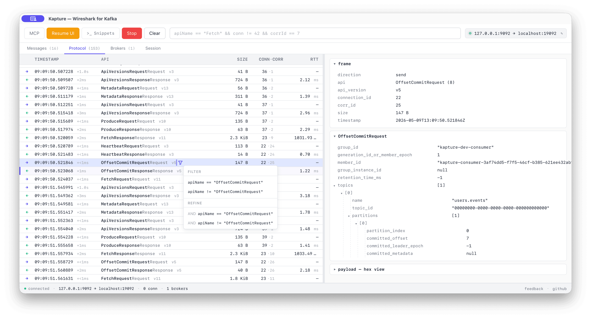

Kapture Wireshark for Kafka.
A desktop app that speaks the Kafka protocol natively, intercepts the traffic between your client and the broker, and shows you what's really going through the wire.

What is your client actually doing?
Seven things that quietly go wrong between your client and the broker. None of them show up in your application logs.
Producer-per-record
Your code creates a new producer for every record instead of reusing one. A full handshake fires per send — broker CPU burns, throughput collapses.
Stale-leader producing
Your client trusts a leader it cached an hour ago. The cluster has moved on; writes still go to the wrong broker until partitions start dropping.
OffsetCommit after every record
A commit on every record. The group coordinator gets hammered, broker CPU spikes for nothing.
Rebalance every few seconds
session.timeout.ms is too tight. Consumers churn the group every few
seconds and stop processing.
Tiny Produce batches
linger.ms=0 + tiny batch.size. Latency wins, throughput
dies.
SASL re-auth dies on a clock
SASL re-auth fails on a fixed schedule. Looks fine for hours, then everything dies at the same minute every time.
Locked api_version
Client picks a protocol version on startup and never updates it. Rolling broker upgrades become silent breakage.
A local TCP proxy. That's it.
Point your Kafka client at 127.0.0.1:9092. Kapture forwards every byte
upstream and copies a decoded view into the inspector. The client doesn't know it's
there.
your client ──▶ 127.0.0.1:9092 ──▶ real broker │ ▼ Kapture inspector (live)
-
✓
No instrumentationYour code stays untouched. No SDK swap, no agent, no JMX dance.
-
✓
No broker pluginWorks against Confluent Cloud, MSK, your local docker, anything.
-
✓
Auth pass-throughSASL/PLAIN, SCRAM-SHA-256/512, TLS, mTLS upstream — all forwarded.
-
✓
Apache Kafka 4.xIncluding KIP-516 topic IDs and KIP-932 Share Groups.
Inside Kapture: protocol view, messages, filter DSL, MCP.
Live wire view
Every Kafka API request/response decoded. corr_id, RTT, payload size,
full body tree on click.
Messages tab
Records flattened from Produce + Fetch. Each one
back-links to the frame it rode on.
Filter DSL
Wireshark-style. Compose, autocomplete, save. Works on the protocol tree and the records.
Connection profiles
Bootstrap, TLS, SASL — saved locally. Passwords in the OS keychain. Last profile pre-selected on launch.
Bonus — agent-driven (MCP)
A local MCP server at http://127.0.0.1:7878/mcp exposes capture /
filter / inspect tools so an IDE agent (Claude Code, Cursor, Windsurf) can drive
Kapture for you. SASL frames are redacted before they cross the boundary.
api: [Heartbeat, JoinGroup, SyncGroup]
window: "5m"
Frequently asked questions.
What is Kapture?
Kapture is a free desktop app for macOS, Linux, and Windows that proxies the Apache Kafka protocol between your client and the broker, decodes every frame, and shows you what's actually going through the wire.
How is Kapture different from Conduktor Console, AKHQ, or Kafdrop?
Topic browsers (Conduktor Console, AKHQ, Kafdrop, Redpanda Console) show data at rest — what's stored on a topic. Kapture shows data in motion: every Kafka API request and response, decoded live, including the protocol exchanges that never appear in your application logs.
Does Kapture work with Confluent Cloud, AWS MSK, Aiven, or Redpanda?
Yes. Kapture is a transparent TCP proxy. Point your Kafka client at Kapture's local
listener (127.0.0.1:9092) and Kapture forwards every byte to your real
broker. It works with any Kafka-compatible cluster, including Confluent Cloud, AWS
MSK, Aiven, Redpanda, and self-hosted Apache Kafka or KRaft clusters.
What authentication mechanisms does Kapture support?
Kapture passes through SASL/PLAIN, SASL/SCRAM-SHA-256,
SASL/SCRAM-SHA-512, TLS, and mTLS upstream. Connection credentials are
saved locally; passwords are stored in the OS keychain (macOS Keychain, Linux Secret
Service, or Windows Credential Manager).
Can I use Kapture with KafkaJS, librdkafka, kafka-python, Sarama, or Confluent
.NET?
Yes. Kapture is client-agnostic — it inspects the Kafka wire protocol, not the client SDK. Any Kafka client that connects to a broker can connect to Kapture's listener instead, with no code changes.
Is Kapture open source?
Yes. Kapture is open source under the Apache 2.0 license. The source is on GitHub at conduktor/kapture.
Does Kapture support Apache Kafka 4.x and KRaft?
Yes. Kapture decodes the latest Apache Kafka 4.x protocol, including KIP-516 topic IDs and KIP-932 share groups. It works with both KRaft and ZooKeeper-managed clusters.
Install Kapture in three steps.
Install Kapture
macOS (Apple Silicon) via Homebrew:
brew tap conduktor/kapture https://github.com/conduktor/kapture
brew install --cask kapture
Linux (.AppImage or .deb) and
Windows (.msi or NSIS .exe): grab the
bundle for your platform from
Releases. The app self-updates on each launch.
macOS Gatekeeper: the app is not yet codesigned with an Apple
Developer ID, so the first launch shows a "Kapture is damaged" warning.
Strip the quarantine attribute once and the app opens normally:
xattr -cr /Applications/Kapture.app.
Windows SmartScreen shows a similar warning on first run — click
More info → Run anyway.
Change your bootstrap server
In your application, point bootstrap.servers at
127.0.0.1:9092 instead of your real broker. Nothing else to change in
your code.
Run your app and watch
Start your application as usual. Open Kapture and watch every Kafka frame stream in — find anomalies, understand exactly what your client is doing on the wire.
Kapture roadmap.
Pattern detector
Spot the anti-patterns above (overcommit, producer-per-record, tiny batches, rebalance loop) and surface them as Wireshark-style "Expert info".
SDK drift detector
Flag wire-level contradictions where the client and the broker's authoritative
state disagree — stale-leader producing, mixed-version api_version,
missing LeaveGroup, scheduled SASL re-auth breaks.
Chaos injection
Inject latency, error codes, connection drops at the proxy layer to validate client behaviour under adversarial conditions. Toxiproxy, but Kafka-aware.
Time-travel debugger
Breakpoints by predicate against Kafka Streams / Flink consumers; step through messages; inspect state stores.